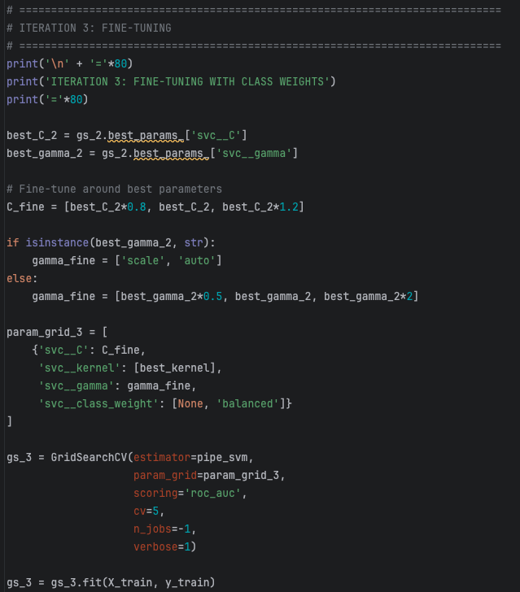

USC — Machine Learning Final
Can AI predict whether water is safe to drink? I wrote the code to find out.

The Project
My first semester at USC, I enrolled in a machine learning course with a simple conviction: it can't be that hard, right? Everyone is coding. Everyone is building things. I wanted to be one of them.
For my final project, I chose a dataset of water samples to see if the sample was safe to drink or not. The question felt urgent. Water potability isn't an abstract problem. It's a public health crisis that effects you differently depending on where you live, how much money you have, and who your government is accountable to. A model that could flag unsafe water quickly and cheaply felt like something worth building.
I wrote every line of code myself. No AI assistance, no shortcuts. It was one of the hardest things I've ever done.